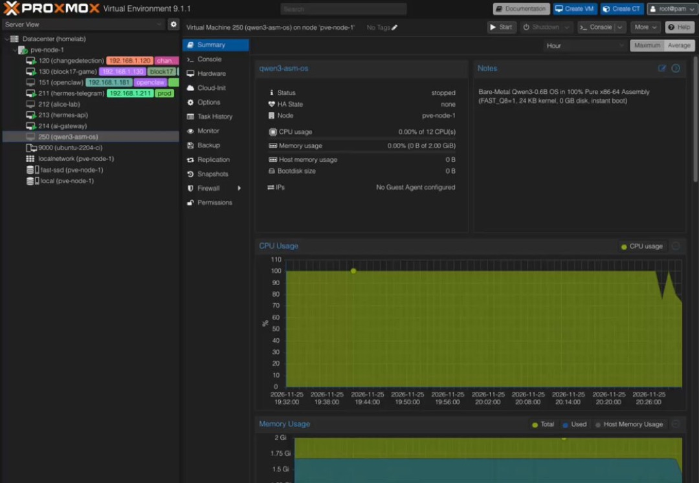
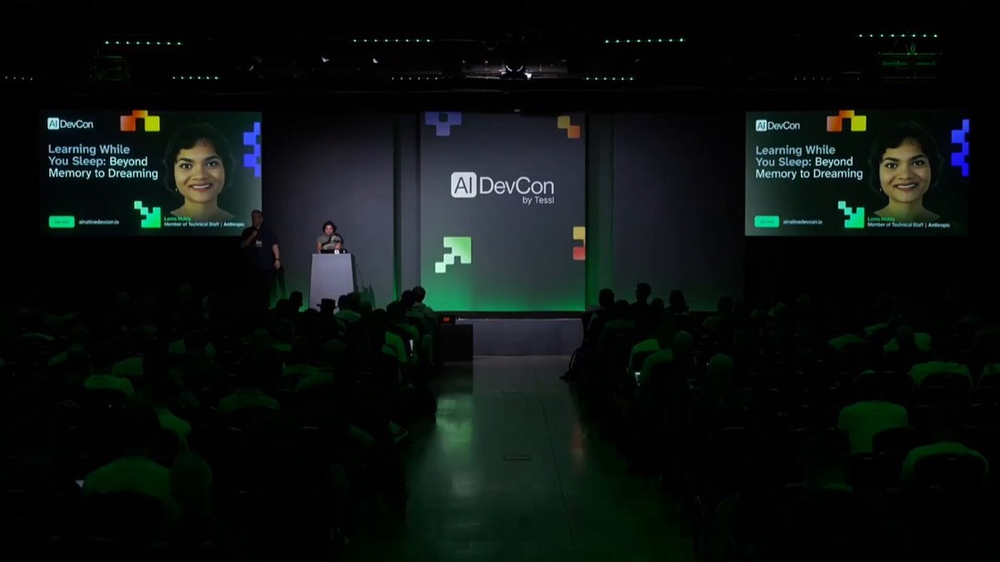
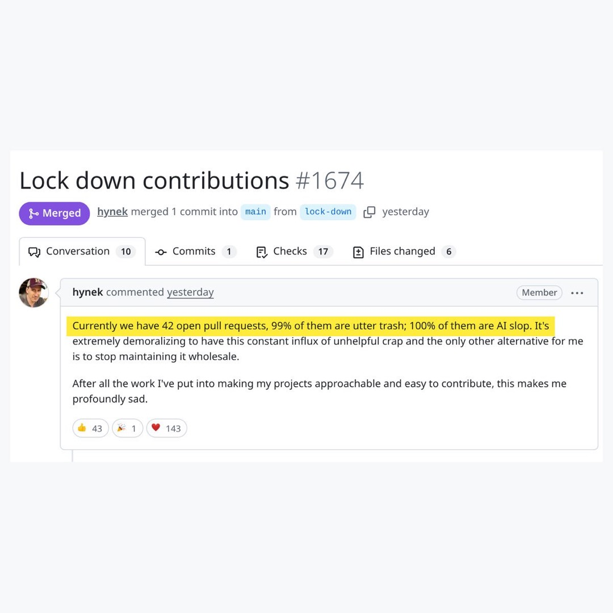
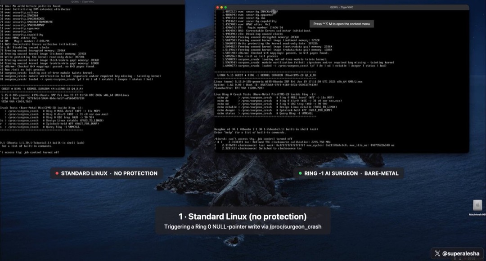

本期速览
02 裸机24KB程序跑0.6B模型超llama.cpp
03 Anthropic用Markdown文件构建Agent记忆
05 attrs因AI生成低质PR关闭外部提交
06 74KB裸机Hypervisor用LLM修复内核崩溃
01｜Claude Code排查隐式状态机提示词
来源（X） · @AIExplorerTim · 2026-11-28 12:52
“找出我应用里所有隐式的状态机。做一个最好的决定，同时提升三件事：用户体验（UX）、开发者体验（DX）、智能体体验（AX），而且不能弄坏任何东西。”
02｜裸机24KB程序跑0.6B模型超llama.cpp
来源（X） · @bojie_li · 2026-11-28 20:16
在《深入理解 AI Infra》中，我提出，传统操作系统和编程语言要支持多种应用，可编程性和性能之间往往要做权衡取舍。而今天最重要的 workload 就是 LLM，AI infra 可以打破操作系统和编程语言的抽象边界，全栈优化，取得极致性能。
btw 我的程序员新铁人三项理论：Agent + LLM + AI infra，取代旧铁人三项：PL/compiler + OS + arch。学不会的，可能就要做快递外卖滴滴这个铁人三项了。
具体这个 24KB 程序怎么做的，我让 Grok Bot 帮我总结了一段：只覆盖生成（decode），读 prompt（prefill）反而更慢。
为什么 decode 能比 llama.cpp 快？第一是算子为这一个模型写死了：默认的 FAST_Q8 路径用 AVX2 的 vpmaddubsw/vpmaddwd 做 INT8×INT8，块缩放是 FP16 再靠 F16C 转成 FP32，再加上按行预取、连续的 head-major KV cache，以及并行 GQA。llama.cpp 要覆盖很多架构和量化格式，这条专用路径在自回归生成上可以少走通用分发。作者在同一台 EPYC 7642、Q8_0、纯 CPU 上的对比里，Linux 版已经比 llama.cpp 快 18%–36%。
第二是裸机再吃大约 10%：整份权重用 2 MiB 大页映射，少了 4 KiB 页表遍历，也没有 Linux 的 mmap、系统调用和调度器。4 线程时裸机 78.89 tok/s、llama.cpp 51.08 tok/s。
那个 24,252 字节的 asm-llm-os.elf 是纯 x86-64 NASM 写的 Multiboot 内核，没有 C、Rust 或 libc。启动路径是 Multiboot → 用 2 MiB 大页把 0–4 GiB 做恒等映射 → 进入 64 位 Long Mode，再用 ACPI/APIC 把所有核拉起来。大约 614 MiB 的 Q8_0 权重做成自定义 .asmbin，当作 initrd 加载后在物理内存里零拷贝映射。
引用内容
Alexey Fateev @superalesha
中文译文
我彻底删除了 Linux，把 Qwen3-0.6B 烘焙进一个 24 KB 的纯 x86-64 汇编操作系统，运行速度比原生 Linux 上的 llama.cpp 最高快 54%。
整个 Multiboot 操作系统二进制文件（asm-llm-os.elf）为 24,252 字节，从零编写，不使用 Linux、Windows、C、Rust 或 libc。它在 74 到 94 毫秒内启动，直接进入 64 位长模式，通过 APIC 唤醒每个 CPU 核心，从物理 RAM 直接映射 614 MiB 的 Q8_0 权重，并让你通过 VGA、PS/2 键盘和串口进入一个实时多轮 KV 缓存聊天界面。
我在同一块 AMD EPYC 7642 上对 llama.cpp（Q8_0，-ngl 0）进行了 CPU 正面对比基准测试：
- 1 线程达到 23.67 tok/s，对比 16.63（+42%）
- 4 线程达到 78.89 tok/s，对比 51.08（+54%）
- 8 线程达到 118.08 tok/s，对比 80.79（+46%）
- 16 线程达到 134.94 tok/s，对比 103.03（+31%，峰值 136.6）
在一台无磁盘 0 GB Proxmox 虚拟机（2014 年 12 核 Intel Xeon E5-2670 v3，2 GiB RAM）上，它能在 5 秒内直接启动到提示符（内核启动 95 毫秒），并从 RAM 实时运行，解码 78 tok/s，预填充最高 111.5 tok/s，还包含一个混合 BIOS+UEFI ISO 构建器。输出在不同线程数下保持逐位精确，并且全部 64 个贪婪 token 与 PyTorch FP32 匹配（余弦相似度 0.99965）。
14.7 KB 的 Linux ELF 构建（FAST_Q8=1 INT8xINT8 AVX2+F16C）在 1 到 40 线程范围内也比 llama.cpp 快 18% 到 36%，而在裸机上使用 2 MiB 大页启动还能再挤出额外 10%。
仓库、ISO 构建器和 Proxmox 设置指南在下面的回复中。
原文
I deleted Linux completely, baked Qwen3-0.6B into a 24 KB pure x86-64 assembly OS, and it runs up to 54% faster than native Linux llama.cpp.
The entire Multiboot OS binary (asm-llm-os.elf) is 24,252 bytes, written from scratch without Linux, Windows, C, Rust, or libc. It boots in 74 to 94 ms straight into 64-bit Long Mode, wakes every CPU core over APIC, maps the 614 MiB Q8_0 weights directly from physical RAM, and drops you into a live multi-turn KV-cache chat over VGA, PS/2 keyboard, and serial.
I ran head-to-head CPU benchmarks against llama.cpp (Q8_0, -ngl 0) on the same AMD EPYC 7642:
- 1 thread hits 23.67 tok/s vs 16.63 (+42%)
- 4 threads hit 78.89 tok/s vs 51.08 (+54%)
- 8 threads hit 118.08 tok/s vs 80.79 (+46%)
- 16 threads hit 134.94 tok/s vs 103.03 (+31%, 136.6 peak)
On a diskless 0 GB Proxmox VM (2014 12-core Intel Xeon E5-2670 v3, 2 GiB RAM), it boots straight to the prompt in under 5 seconds (95 ms kernel boot) and runs live out of RAM at 78 tok/s decode and up to 111.5 tok/s prefill, with a hybrid BIOS+UEFI ISO builder included too. Output stays bit-exact across thread counts and matches all 64 greedy tokens against PyTorch FP32 (0.99965 cosine).
The 14.7 KB Linux ELF build (FAST_Q8=1 INT8xINT8 AVX2+F16C) also beats llama.cpp by 18% to 36% from 1 to 40 threads, and booting bare metal with 2 MiB huge pages squeezes out another 10% on top.
Repo, ISO builder, and Proxmox setup guide are in the reply below.

03｜Anthropic用Markdown文件构建Agent记忆
来源（X） · @rchen1386 · 2026-11-28 14:52
以前 AI 总是反复踩同一个坑，你得天天手动改 Prompt 给它擦屁股。现在 Anthropic 的思路彻底变了：让 AI 自己复盘、自己改记忆，越用越聪明！
全程大白话干货，直接拿走：
1. 别折腾花哨的记忆插件，文件夹 + Markdown 就是最优解：把记忆当成书架，让 Agent 用基础搜索工具“用到哪本翻哪本”，又快又稳。
2. 别指望 AI 边干活边总结：干活时分心记笔记效果很差，而且单个 Agent 看不到其他 Agent 踩过的坑，记忆很快就会过时。
3. 终极杀招“做梦机制”：趁你睡觉，后台自动派一批 Agent 把白天的对话和报错全扫一遍，揪出反复翻车的规律，整理好“记忆更新清单”等你第二天一键审批。
4. 上生产就加三道保险：改坏能随时回滚、多个 Agent 同时写不打架、全局规则只读不准乱改。
看似半夜多烧了一点 Token，实测总成本反而更低，因为第二天 AI 干活直接一遍过，再也不瞎试错！
这 30 分钟要是卖 400 美金，绝对会被吹成今年最神的 Agent 课。现在完全免费，赶紧码住刷完 ↓

04｜Seedance 2.5视频生成API价格对比
来源（X） · @sangngqang · 2026-11-28 19:20
中文译文
Seedance API 价格，同一模型，并排对比。
Seedance 2.5 720p，每秒：Runway API $0.30 · Replicate $0.231 · MartLLM $0.183
Seedance 2.0 Mini 480p：Runway API $0.16 · Replicate $0.04 · MartLLM $0.016
按秒付费。失败的视频不计费。
原文
Seedance API prices, same model, side by side.
Seedance 2.5 720p, per second: Runway API $0.30 · Replicate $0.231 · MartLLM $0.183
Seedance 2.0 Mini 480p: Runway API $0.16 · Replicate $0.04 · MartLLM $0.016
Pay per second. Failed videos aren't billed.
05｜attrs因AI生成低质PR关闭外部提交
来源（X） · @sysxplore · 2026-11-28 22:16
中文译文
一个被约 150 万个 GitHub 仓库使用的 Python 库刚刚对外部拉取请求关上了大门，原因正是 AI 垃圾。
attrs 维护者 Hynek Schlawack：
“目前我们有 42 个打开的拉取请求，其中 99% 完全是垃圾；100% 是 AI 垃圾。这种持续涌入的无用废物极其令人沮丧，而我唯一的选择就是彻底停止维护它。”
拉取请求现在仅限协作者提交，“直到 GitHub 给我们更好的工具来处理它们。”
“在做了十多年的 FOSS 维护之后，对我来说这是极其悲伤的一天。”
attrs 不会消失。人类仍然可以加入团队，但必须先证明自己。
原文
A Python library used by about 1.5 million GitHub repos just shut its doors to outside pull requests, because of AI slop.
attrs maintainer Hynek Schlawack:
"Currently we have 42 open pull requests, 99% of them are utter trash; 100% of them are AI slop. It's extremely demoralizing to have this constant influx of unhelpful crap and the only other alternative for me is to stop maintaining it wholesale."
Pull requests are now limited to collaborators "until GitHub gives us better tools to deal with them."
"After more than a decade of FOSS maintenance, this is a profoundly sad day to me."
attrs isn't going away. Humans can still join the team, but they have to earn it first.

06｜74KB裸机Hypervisor用LLM修复内核崩溃
来源（X） · @superalesha · 2026-11-28 04:58
中文译文
我构建了一个 74 KB 的裸机 hypervisor，把一个 2B LLM 放在 Linux 之下的 Ring -1 中，在内核 panic 崩溃中途捕获致命错误，在 RAM 中实时修补损坏的机器码，并让 Linux 继续运行而无需重启。
左侧窗口是标准 Linux 因 Ring 0 空指针写入（*(u32 *)0 = 0xDEADBEEF）而瞬间死亡。右侧窗口在我的自定义 Type-1 AMD SVM hypervisor（x86-64 NASM 汇编 + 零 libc C，0 宿主操作系统）下运行完全相同的崩溃命令。
Ring -1 没有崩溃，而是在 Linux 来得及 panic 之前将其冻结，在 24 个 AVX2 核心上运行一个经过 GRPO 训练的 MiniCPM5-2B（Q4_K_M），耗时 11.1 秒，通过 NPT 用 11 个 NOP（0x90）覆盖 guest .text 物理 RAM 中那 11 个出错字节，然后调用 `VMRUN`。
Linux 打印出 SURVIVED NULL-DEREF！并且 uptime 从未重置。
我们使用一个很小的 /proc/surgeon_crash 测试模块来并排触发干净的 Ring 0 崩溃。在 122 个未见过的故障场景中（包括它必须拒绝修补的不安全自旋锁崩溃），这个 GRPO 检查点达到 97.54% pass@1，且 0 个危险修补（基线为 16.39%）。
完整的 NASM + C 源代码（75,424 字节二进制文件）已在我的 llm.asm 仓库中上线（MIT，链接见下）。
原文
I built a 74 KB bare-metal hypervisor that puts a 2B LLM BELOW Linux in Ring -1, catches a fatal Kernel panic mid-crash, patches the broken machine code live in RAM, and keeps Linux running without a reboot.
Left window is standard Linux dying instantly from a Ring 0 NULL-pointer write (*(u32 *)0 = 0xDEADBEEF). Right window runs the exact same crash command under my custom Type-1 AMD SVM hypervisor (x86-64 NASM assembly + zero-libc C, 0 host OS).
Instead of crashing, Ring -1 freezes Linux before it can panic, runs a GRPO-trained MiniCPM5-2B (Q4_K_M) across 24 AVX2 cores in 11.1 seconds, overwrites those 11 faulting bytes in guest .text physical RAM with 11x NOP (0x90) via NPT, and calls `VMRUN`.
Linux prints SURVIVED NULL-DEREF! and uptime never resets.
We used a tiny /proc/surgeon_crash test module to trigger clean Ring 0 crashes side by side. On 122 unseen fault scenarios (including unsafe spinlock crashes it must refuse to patch), this GRPO checkpoint hits 97.54% pass@1 with 0 dangerous patches (vs 16.39% on base).
Full NASM + C source code (75,424 bytes binary) is live in my llm.asm repo (MIT, link below).

引用内容
Alexey Fateev @superalesha
The entire Multiboot OS binary (asm-llm-os.elf) is 24,252 bytes, written from scratch without Linux, Windows, C, Rust, or libc. It boots in 74 to 94 ms straight into 64-bit Long Mode, wakes every CPU core over APIC, maps the 614 MiB Q8_0 weights directly from physical RAM, and drops you into a live multi-turn KV-cache chat over VGA, PS/2 keyboard, and serial.
I ran head-to-head CPU benchmarks against llama.cpp (Q8_0, -ngl 0) on the same AMD EPYC 7642:
- 1 thread hits 23.67 tok/s vs 16.63 (+42%)
- 4 threads hit 78.89 tok/s vs 51.08 (+54%)
- 8 threads hit 118.08 tok/s vs 80.79 (+46%)
- 16 threads hit 134.94 tok/s vs 103.03 (+31%, 136.6 peak)
On a diskless 0 GB Proxmox VM (2014 12-core Intel Xeon E5-2670 v3, 2 GiB RAM), it boots straight to the prompt in under 5 seconds (95 ms kernel boot) and runs live out of RAM at 78 tok/s decode and up to 111.5 tok/s prefill, with a hybrid BIOS+UEFI ISO builder included too. Output stays bit-exact across thread counts and matches all 64 greedy tokens against PyTorch FP32 (0.99965 cosine).
The 14.7 KB Linux ELF build (FAST_Q8=1 INT8xINT8 AVX2+F16C) also beats llama.cpp by 18% to 36% from 1 to 40 threads, and booting bare metal with 2 MiB huge pages squeezes out another 10% on top.
Repo, ISO builder, and Proxmox setup guide are in the reply below.
07｜Docker Hub不可变标签暴露签名缺失
来源（X） · @Docker · 2026-11-28 22:00
中文译文
Release 2.2 曾在 Docker Hub 上以全部三个版本标签发布。它发布时未签名。
Docker Captain Vladimir Mikhalev 展示了 Docker Hub 不可变标签如何暴露了这一缺口，以及为什么应先对摘要签名、最后再移动标签。
阅读更多：https://bit.ly/4tmfaSo
原文
Release 2.2 was on Docker Hub under all three version tags. It shipped unsigned.
Docker Captain Vladimir Mikhalev shows how Docker Hub immutable tags exposed the gap, and why to sign the digest first and move the tags last.
Read more: https://bit.ly/4tmfaSo